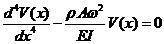
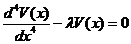

Aim
To find first few natural frequencies of a cantilever by impact test.
A. Background:
a. Beams and Cantilever
Beams are structural members that have smaller dimensions of cross sections compared to its length (its axis) and are subjected to loads perpendicular to its axis; i.e. they are subjected to transverse loads. The whole beam deforms in the plane containing the axis and the transverse loads. We say that the beam bends. The beams are usually supported at both ends and they are termed differently depending on the support conditions.
When one end of a beam is fixed, and the other free, it is called a Cantilever beam, or simply a Cantilever. When both end-supports re simple, the beam is called a Simply Supported Beam. If both ends of a beam are fixed, it is a Fixed-Fixed Beam or simply a Fixed Beam.
b. Physical systems that can be modeled as cantilever:
The diving board on a swimming pool, the slab on a porch, wall mounted structures, overhanging booms of cranes, etc can be modeled as cantilever. These physical systems can be idealized with loss of some accuracy and generalization but ability and simplicity of analysis. The vibration characteristics of these systems can be very well understood by knowing the vibrations of its cantilever model.
As explained in the general theory, the characteristics of natural vibration are extremely important in knowing the response of the systems to forced excitations.
In this experiment, we shall find out the natural frequencies of a cantilever from its response to harmonic support-excitation.
c. Natural Vibration of a Cantilever - Natural frequencies and mode shapes
A Cantilever is a continuous system-its mass and elasticity are distributed all over its volume. It can be considered to have infinite very small masses connected by infinite very small springs resist the banding of the Cantilevers. Hence there are infinite degrees of freedom and infinite natural frequencies. And also, corresponding to every natural frequency, it has a particular shape of vibration, called Mode Shape. The lowest natural frequency is called Fundamental natural frequency and corresponding mode, fundamental mode or simply the first mode. Here are animations for first three modes of vibration of a Cantilever. Click on the figures to see the modes.
|
|
|
|
|
Mode - I |
Mode - II |
Mode - III |


A cantilever of rectangular cross section bxd; Area of cross-section, A = bxd; and length L is shown in the figure. Cross-sectional dimensions are small compared to its length.
 Let us consider its natural vibration in vertical plane, perpendicular to its length L. Let I be the second moment of the area of cross section about neutral axis perpendicular to the plane of vibration;
Let us consider its natural vibration in vertical plane, perpendicular to its length L. Let I be the second moment of the area of cross section about neutral axis perpendicular to the plane of vibration;

Let E be the modulus of elasticity of the material from which the cantilever is made. For steel value E is taken as E = 210GPa (210x109 N/m2) and for Aluminum, it is 70 GPa Let ρ be the density of the material; for steel, ρ = 7800 kg/m3; for Aluminum, ρ = kg/m3
d. Equation of Motion
Once disturbed from its position of equilibrium and left to its own, the cantilever will vibrate naturally; it will perform natural vibration. From theory, we know that the vibration of a cantilever is governed by the equation

at x = 0 (i.e. at fixed end): Deflection v(0,t) = 0 and Slope dv(0,t)/dx = 0, at all t
and at x = L (i.e. at free end), Bending moment
 and Shear force
and Shear force 
The initial condition is v(x,0) = 0
As both, boundary conditions and initial conditions, are specified, the problem is said to be of mixed initial value and boundary value problem.
For small amplitudes of vibration of the cantilever, the motion can be assumed to be harmonic and we can write this equation in terms of amplitude of vibration as a function of x alone. The equation is as follows:
 and Shear force 
There are infinite sets of V(x) and λ which together satisfy the above equation. Such problems are called Eigenvalue problems and the solutions are called eigenvalues λi, and eigenvectors V(x)i.
V(x) is function of x that shows shape of the cantilever (Amplitudes of vibration at different values of x) corresponding to the respective frequencies of natural vibration λi. The shape of cantilever vibrating with certain natural frequency is called mode shape of cantilever for that frequency. Three of them were shown in figures earlier.
e. Impact test, excited modes and natural frequencies
When a cantilever is given an impact at some point, it is set into vibration. In general, the cantilever will not vibrate in any one single natural mode with corresponding single natural frequency of vibration. Rather, number of modes will participate in its vibration depending on the point of impact with corresponding natural frequencies as components of the periodic vibration. In an impact test, an accelerator is fitted at some point on the cantilever and the cantilever is hit with an impact hammer giving an impulse to the cantilever. FFT analysis of the signal received from the load cell fitted at the tip of the impact hammer reveals that it contains all frequencies over a range. Similarly, the FFT analysis of the signal will also reveal that it contains all those frequencies but amplitude of vibration corresponding to the natural frequencies will be high. Exactly this phenomenon is used to identify the natural frequencies of the cantilever by impact test. Ratio of signals received from the accelerometer and that of the impact hammer is taken in frequency domain which is called FRF (Frequency Response Function). The accelerometer is fixed at one point on the cantilever and impulse is given at predetermined points with the impulse hammer. Corresponding FRFs are computed using the softwares of modal analysis. Using techniques of curve fitting, Modal Identification Function is generated that shows peaks at the natural frequencies with the selected range of frequencies. And thus the natural frequencies of the cantilever are found by the impact test.

Vibratory systems around us
Here are some examples of physical systems where the vibrations are prominent and can be observed easily. In musical instruments the vibrations are intentional. The parts of musical instruments are designed so that they generate sounds that are pleasant to listen. In many cases the vibrations are unwanted and we try to minimize them.
1. A chandelier hanging from ceiling oscillates to and fro following an initial disturbance; maybe due to a breeze of air.
2. The oscillations of the chandelier at cathedral of Pisa, Italy, were studied by the famous scientist Galileo Galilee.
3. A load attached at end of a wire-rope of a crane oscillates to and fro due to initial disturbance; maybe due to sudden stopping of carriage of the crane while revolving about the vertical axis.
4. The pendulum used in clock of olden days used to oscillate to and fro once every second. i.e. it had a period of oscillation of one second.
5. String of a guitar, when plucked and left to its own, vibrates and makes a musical sound. It comes to rest after a while; the vibrations die out. Similarly, the diaphragm of a table vibrates when hit and left to its own. It also comes to rest after some time.
All these are examples of vibratory systems that are set into vibration following an initial disturbance. All these systems have three components: mass, due to which the system possesses inertia; elasticity, due to which potential energy can be stored; and components that dissipate energy causing the vibratory motion to be damped which bring them to rest after some time.
Vibration or vibratory systems are classified in number of ways. Some of the classifications are given below:
Free and forced vibration - A free vibration occurs due to initial displacement or velocity, or both, applied to the system only initially. There is no external force acting on the system when the system is vibrating. A forced vibration occurs when the system vibrates in response to external force applied continuously. When the force applied is periodic, i.e. it repeats itself after a fixed interval of time, the forced vibration is called periodic. If the periodic force and hence the resulting vibration varies sinusoidally with respect to time, the vibration is called harmonic. If the force is not periodic, the forced vibration is called aperiodic or random.
Damped and undamped vibration -
When the vibratory system has elements that offer resistance to motion, energy is continuously dissipated and the free vibrations of such systems come to halt after some time. This is called damped vibration and such systems are called damped systems. Forced vibration of a damped system continues as long as the force acts but some of the work done by the external force is lost in overcoming the resistance offered by the damping elements. Systems without damping elements are called undamped systems and their vibrations are called undamped vibrations. All systems in nature have some or the other damping element and their natural vibrations are damped. Hence they come to rest after some time following free vibrations. Nevertheless, we study the vibration of undamped systems because the concepts developed in studying them are useful in analyzing and understanding the phenomena occurring in vibration of damped as well as complicated systems. When the force of resistance offered by a damping element is proportional to velocity of mass of the system, it is termed as viscous damping and the damping element is called a viscous damper. If the force of resistance has a constant value, it is termed as Coulomb damping. Damping due to dry friction shows this kind of behavior. Coulomb damping can occur when the system has components rubbing over each other. There are other types of damping also which shall be discussed later.
Degrees of freedom : The vibratory systems are classified as single-degree-of-freedom systems, Multi-degree-of-freedom-systems or continuous systems. The number of degrees of freedom corresponds to the number of independent co-ordinates required to completely describe the motion of the system. In fact, it is the sum of the possible ways each mass can move independently of other masses. The translation of a mass along the three axes, X, Y and Z, and the three rotations about each of these axes constitute possible ways of motion of a mass. Many times, many of these six motions of a mass are restricted and a mass can have one or two degrees of freedom, i.e. only translation or translation and rotation of a single mass about any one of the axes. Physical system These days we have number of towering buildings. Many a times the residential part of such a building is supported on a tall concrete structure. One of such buildings is the ‘Milad Tower’, situated in Tehran, Iran. Its head consists of a large pod with 12 floors and below is a staircase and elevators to reach the area. The oscillations of such tall buildings, in response to earthquake and wind, are important from design point of view. And to study these oscillations, we must know the characteristics of its natural vibration. Analysis of such a physical system can be very much complicated. To obtain first rough estimate of the natural frequency of vibration, the problem can be stated and the physical system can be modeled in a simple way as described below. Problem statement To find natural frequency of oscillation of the tower in the direction perpendicular to the vertical axis (i.e. natural frequency of transverse oscillation of the tower) and position of the head at any given time. Physical model of the system M The physical model for the system under consideration can be as shown in This is the simplest model. Only the mass of the building at the top is considered and it is considered to be concentrated at one point. The mass of the vertical pillar supporting the buiding is neglected and is considered to be a cantilever offering only elesticity. Thus it becomes a single degree of freedom system with single mass and only one way of motion of the mass: translation in direction perpendicular to the vertical axis of the building. Further we assume that the amplitude of this motion to be small. The equivalent stiffness of the cantilever is given by
Mathematical model Using Newton’s second law of motion, the equation of motion of the mass is written as
The first term is the inertia force which is equal to mass multiplied by acceleration and the second term is the spring force given by stiffness of the spring multiplied by its elongation or compression. The differential equation is a mathematical model of the system. General Solution The solution to the above differential equation is given by
A and B are constants that depend the initial conditions, i.e. the displacement and velocity of the mass when we started measuring our time. These are known as initial conditions.
Particular solution obtained from the initial conditions Substituting the initial conditions in above expression, we can obtain the values of A and B. Thus if X0 and V0 are the initial displacement and velocity, respectively, given to the mass, the above expression will yield values of A and B as Now the expression for x becomes
And we can obtain the value of x at any time t from this expression. Thus we have obtained the expressions for natural frequency and position of the head at any given time ‘t’ and the problem stated by the problem statement is solved.
Linear and Non-linear Vibrations : Vibration is said to be linear if the damping force is proportional to velocity, inertia force is proportional to mass, and restoring force is proportional to displacement. If any of this proportionality is not satisfied, the system is said to be non-linear.
Solving engineering problems : Analytical methods are usually applied to models of actual systems. We carry out experiments on models if physical systems are not available for testing. While preparing such models, we exclude superfluous details of the system but include all essential and important features of the actual system. While doing so, we idealize and approximate important behaviour of the system without affecting much the accuracy in predicting the behaviour. The system model so developed provides ease of application of analytical and experimental techniques. Once a satisfactory model is developed, laws of Physics can be applied which give a set of mathematical equations relating the properties and variables of the system. Such a set of mathematical equations is called mathematical model of the system. Solving the set of equations (or a single mathematical equation) provides expression for the system variable in terms of location and time. We call this as ‘solution’ of the problem. As an illustration of the concepts described above, see the example given below.

 . The symbols carry their usual meanings.
. The symbols carry their usual meanings.


 is the natural frequency in radians per second and is given by
is the natural frequency in radians per second and is given by
 and
and


Aim: To find first few natural frequencies of a cantilever by ‘Impact Test’
Please read ‘General Theory’ and ‘Background’ related to this experiment.
This section explains the experimental setup, procedure, observations and analysis related to the experiment.
2. Experimental set-up
A. Apparatus:
Following apparatus will be used to perform the real experiment:
a.Impact Hammer
b.Accelerometer
c.Multi-channel Vibration Analyzer (At least two-channel)
d.A PC or a Laptop loaded with software for modal analysis.
e.Test-specimen (A cantilever held in a fixture)
f.Power supply for the PC and vibration analyzer, connecting cables for the impact hammer and accelerometer, fasteners and spanner to fix the specimen in the fixture, and adhesive/wax to fix the accelerometer).
B. Brief information about the important apparatus used in real experiment:
a.Impact Hammer: This looks like an ordinary hammer but its head is fitted with a load cell and contains electronic circuitry and an out put cable that can be connected to vibration analyzer. On hitting the impact hammer on any structure an impulsive force is applied to the structure which is a cantilever in our case. An equal and opposite force is sensed by the load cell fitted in the head of the hammer. This generates an electric signal that is given to vibration analyzer which analyzes the signal, compares with the signal received from accelerometer fixed o the structure, nd this information is used to develop FRF (Frequency Response Function) and finally the natural frequencies of the structure are found.
b.Accelerometer: An accelerometer is a device (a transducer) which when attached to a vibrating structure gives out electric signal proportional to the acceleration. This signal is given to a vibration analyzer which processes and analyzes the signal. In case of this experiment, the signal coming from accelerometer fitted to the cantilever is analyzed with respect to the one received from the impact hammer in order to find the natural frequencies of the cantilever.
c.Vibration Analyzer: Vibration Analyzer is an electronic device that processes and analyzes the signals received fro transducers used in vibration measurement like impact hammer, accelerometer, digital tachometer, etc. It has number of channels, i.e. it can receive number of electric signals simultaneously. Four-channel vibration analyzer is quite common. The vibration analyzer has very sophisticated electronic circuits and works together with a computer. Fast Fourier Transform (FFT) is an algorithm frequently used for analysis of the electric signals which provide frequency components and their corresponding amplitudes present in the signals.
d.A PC or a Laptop loaded with a software for modal analysis: In addition to the software used alongwith the vibration analyzer, softwares are available now-a-days devoted exclusively to the modal analysis. Such softwares facilitates inputting data to the computer related to geometry of the structure, location of fixing of the accelerometer on the structure as well as points of hitting of the impact hammer, their directions, and so on. Also, there are facilities to select type of analysis required, ranges of various parameters of interest, and so on. Such softwares essentially process the signals received from the impact hammer and accelerometer, carrying out their FFTs, finding FRF, obtaining Mode Indicator Function, carrying out curve fitting over a selected range of frequencies, and finally providing the natural frequencies, mod shapes, and modal damping factors.
e.Fixture and Test-Specimen: A fixture holds the Steel bar of rectangular cross section firmly at one end so that the specimen can be considered as a cantilever. The cross sectional dimensions of the cantilever are 11.8 x 3.175 mm and length 150 mm. The fixture holds the bar firmly at one end and the fixture rests on a table. A small (miniature) accelerometer is attached at the point, marked as node 5, using an adhesive, Locktite.
3. Procedure – Real experiment
a. Prepare the cantilever: Measure the length on the fixture that holds the steel bar and leave a margin of that length on the steel bar. Divide the remaining length of the steel bar into six parts and mark node numbers at each division – from 1 through 7. Let node 7 be the free end and node 1 the fixed one. Fix the accelerometer to the steel bar at node 4 but on the face of the bar opposite to the markings. Ensuring that face of bar with markings and node numbers up, fix the bar into the slot on the fixture so that a cantilever is formed.
b. Connect the wires and cables: Make connections of the vibration analyzer, PC or laptop, accelerometer and the impact hammer as given in the manuals or under guidance of experts.
c. Switch on the power supply. Open the softwares of vibration analysis and experimental modal analysis installed on the PC/laptop. Provide necessary inputs and make necessary settings in the softwares. Ensure that there is proper supply and communication between the devices connected.
d. Now we shall provide impacts by the impact hammer on the nodes marked on the cantilever one by one. Impacts will be given on nodes 2, 3, 4, 5, 6, and 7; node 1 is fixed. Accelerometer is connected at node 5. Signals from the impact hammer and the accelerometer will be received by the vibration analyzer for each impact provided one by one and will be compared and analyzed by the softwares. Curve known as Frequency Response Function (FRF) will be generated by the software that is used to find the natural frequencies of the cantilever.
e. Observe the curve and read frequencies that correspond to peaks of the FRF.
4. Procedure – Virtual experiment
A cantilever will be seen on the screen of your PC, held in a fixture at one end, thereby making its one end fixed. It is divided into six equal parts and seven points are marked from 1 to 7 due to this division. An accelerometer is seen fixed at point 5. Point 7 is at free end. The point at which the hammer is to be hit can be selected by choosing it from the button ‘choose’ and the hit can be performed by clicking on the button ‘hit’. Dimensions and material of cantilever are given. The FRF is displaced in the window after every hit. At the end Mode Identification Function is seen from which the natural frequencies can be identified. Follow the steps given below to find the natural frequencies of the cantilever by impact test:
a. Choose point 2 from the button for the hit; the hammer will move just above that point. Perform the hit by clicking on the button ‘hit’. The cantilever will be seen vibrating for some time and corresponding FRF (input at point 2 at which hammer is hit and output from point 4 at which the accelerometer is fixed) will be displayed in the window.
b. Repeat step ‘a’ for hits at all other points from 3 to 7.
c. Click on the button ‘obtain FRF’; Modal indicator Function will be displayed.
d. Observe the graph marking frequencies corresponding to the peaks. The peaks correspond to the natural frequencies.
5. Observations and analysis:
1. Observe FRF (Mode Identification Function)
2. Note the frequencies that correspond to the peaks of amplitude. These correspond to the natural frequencies of the cantilever. In fact, they correspond to the natural frequencies of the principal modes of the cantilever that were excited, or participated in vibration of the cantilever due to impacts.
3. Compare these values with those obtained from formulae given in the ‘background’ of this experiment
4. Ponder on the difference in values obtained from these two sources – Experimental and Analytical.

1.
How many natural frequencies does a cantilever have?
a. One b. Two c. Infinite d. Cannot be predicted
2.
Theoretically, how many frequency components does an impulse of very short duration and large amplitude have?
a. Only one b. All over a range of frequencies c. few selected frequencies d. cannot be said
3.
Which method of finding natural frequencies did we use in the current experiment
a. Fixed accelerometer and roving hammer
b. Hammer at fixed point and roving accelerometer
c. Hammer and accelerometer both at fixed point
d. Hammer and accelerometer both roving
4.
What is FRF (Frequency Response Function)
a. Response of a point to an excitation of single frequency
b. Ratio of output from accelerometer (response at a point) to input by impact hammer (excitation at some point) in frequency domain
c. Response of a point to harmonic excitation with frequency varied in step
5.
Why is the FRF complex?
a. Because it is ratio of quantities that may not be in-phase
b. It is ratio of quantities that are complex themselves
c. FRF is not necessarily complex.